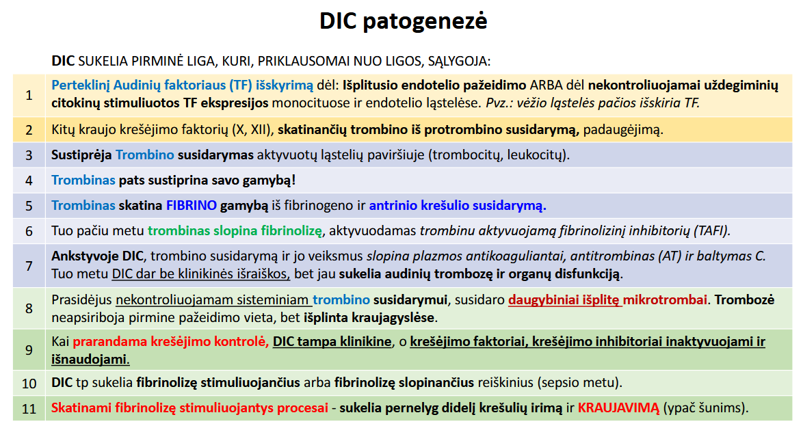
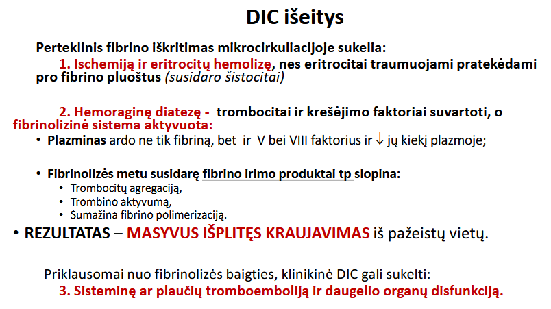

Edema
Starlingo pusiausvyra:
- Hidrostatinis stumia, onkotinis traukia.
- Arteriniuose kapiliaruose filtracijos slėgis 7.
- Veniniuose kapiliaruose absorbcinis slėgis -6.
- Skirtumas iš audinių grąžinamas per limfagysles.
- Sutrikus pusiausvyrai atsiranda edema.
- Kairės širdies nepakankamumas - edema plaučiuose. Dešinės - kūno venose, kepenyse.
Edema - skysčių susikaupimas intersticiniame audinyje.
- Lokalizuota;
- Generalizuota ((Ekstraląstelinė hiperhidracija (širdies nepakankamumas);
- Išplitusi - anasarka.
Vandenė - skysčiai kaupiasi natūraliose kūno ertmėse.
- Hydrothorax, pericardium, cephalus, peritoneum arba ascitis
Anasarka - sunki, išplitusi po visus organus, bet ypač poodiniame audinyje, intersticinio audinio edema.
Minimaliai pažeista kraujagyslė/sutrikus Starlingo p. skirsis transudatas. Mažai baltymų, vandeningas, nėra uždegimo l. ir bakterijų.
Stpriai pažeistas endotelis išskirs eksudatą. Daug baltymų, klampus, daug leukocitų, bakterijos.
Edema gali išsivystyti dėl:
- Padidėjusio hidrostatinio slėgio.
- Sumažėjusio onkotinio slėgio.
- Padidėjusio mikrokapiliarų pralaidumo.
- Limfos apytakos sutrikimų.
1. Hidrostatinis slėgis kraujagyslėse padidėja dėl:
- Širdies nepakankamumo, kurį sukelia:
- Padidėjęs centrinis veninis spaudimas;
- Sumažėjusi inkstų perfuzija.
- Sumažėjęs min širdies tūris, mažėja išstumiamo arterinio kr. kiekis.Inkstai neaprūpinami O2.Aktyvuojasi:
- R-A-A ašis: kyla hidrostatinis kraujag. slėgis - transudatas.
- Inktų vazokonstrikcija: Na+ + H2O rezorbcija, mažėja glomerulų filtracija - Na+ + H2O retencija.
- Padidėja ADH.
- Portalinės hipertenzijos.
- Padidėjęs rezistentiškumas portalinei kraujotakai.
- Dėl kepenų patologijų.
- Didėja hidrostatinis slėgis portalinėje kraujotakoje. ASCITAS
- Didėja hidrostatinis slėgis, skysčiai filtruojasi į Disso tarpą, tada į limfagysles.
- Normoje krūtinės latako limfos kiekis = 1 L/d.
- Cirozė sukelia hipoalbuminemiją, stiprina edemą.
- Mažėja inkstų perfuzija.
- Antrinis hiperaldosteronizmas.
- Venų obstrukcijos.
- Kapiliarų pralaidumas nepadidėjęs.
- Baltymų neprarandama.
2. Plazmos onkotinio slėgio sumažėjimo priežastys: padidėjęs baltymų netekimas; sumažėjusi baltymų sintezė.
3. Mikrokapiliarų pralaidumo padidėjimo priežastys:
- Mikrokapiliarų endotelio kontrakcija: histaminas, bradikininas, leukotrienai.
- Mikrokapiliarų endotelinių ląstelių citoskeleto pertvarka. Citokinai: IL-1, TNF.
- Pažeisti mikrokapiliarai.
- Aktyvuotų liaukocitų pažeisti mikrokapiliarai.
- Neovaskuliarizacija.
- EKSUDATAS
Limfos apytakos sutrikimų priežastys:
- Limfagyslių patologijos.
- Filariazė - limfmazgių parazitas.
- Stazinis širdies nepakankamumas: aukštas veninis slėgis - limfa kaupiasi limfagyslėse, nes negali nutekėti į perpildytas venas.
Patogenezė: Sutrikus limfos tekėjimui, tarpląsteliniame skystyje daugėją baltymų, tai padidina intersticinio skysčio onkotinį slėgį, pasireiškia LIMFOGENINĖ edema.
Edemų pasekmės:
- Edema šalima per limfag.
- Lėtinė gali peraugti JA.
- Edema spaudžia organus functio laesa.
Edemų rūšys:
- Poodinė - paspaudus lieka duobutė. Trukdo žaizdų gijimui.
- Širdinė - tai generalizuotos veninės hiperemijos požymis ir pasekmė. Dažniausiai susidaro plaučiuose: putotas transudatas, miokardo hipoksija.
- Plaučių - pagr. dėl širdies nepakankamumo.
- Inkstinės kilmės - vanduo sulaikomas, Na rezorbuojamas (antrinis aldosteronizmas: pralaidumas up - proteinurija - hipovolemija - aldosterono sekrecija).
- Kepenų - hipoproteinemija dėl kepenų pažeidimo; pakilęs aldosteronas; Ascitas - dėl kepenų cirozės pakilo hidrostatinis slėgis portalinėje sistemoje.
- Bado (kacheksinė) - dėl hipoproteinemijos.
- Smegenų (hydrocephalus) - trauma, abscesai, navikai, infekcija.
Hiperemija
Mikrocirkuliacija - periodinis tekėjimas dėl kapiliarų sienelių nelygumo ir kraujo/audinių slėgių skirtumo. Audiniais kraujagyslėmis tekančio kraujo kiekis priklauso nuo kapiliarų arterinio ir veninio slėgių skirtumo. Sutrikimai: hiperemija, kraujavimas, trombozė, DIK, embolija, ichemija, infarktas, šokas.
Hiperemija - kraujas susitvenkia kraujagyslėse. Fiziologinė ir patologinė (rezultatas).
- Lėtinė, ūminė.
- Vietinė, sisteminė
- Aktyvi (arterinė) - sustiprėjęs įtekėjimas. Ūmi-aktyvi-vietinė. Sukelia uždegimo priežastys.
- Imuninės l., vazoaktyvios medžiavos. Metabolitai, pamžėja deguonies ir pH. Išsiplečia arteriolės priteka kraujo prisotinami deguonimi audiniai ir išnešami metabolit.
- Reaktyvioji hiperemija - arterinės hiperemijos potipis. Po trumpos ischemijos.
- Pasyvi (veninė)(stazė). - apsunkintas ištekėjimas.
Pasekmės: stazė, išsiplėtusios kraujg. pilnos sulipusių ERT, audinys neaprūpinamas maisto medž. ir O2, hipoksija, nekrozė, cirozė, plaučių edema, širdies nepakankamumas, sumažėjusi medž. apykaita, atrofija, degeneracija, JA proliferacija.
Požymiai: cianozė, nukritusi vietinė temp., pabrinkimas, skausmas, functio leasa, kraujas teka kaip švytuoklė, hemorragia per diapedesis, aplink edema, hipoksija, nekrozė.
- Ūminė vietinė - vena užsikimšusi, užspausta, užsukta. Bendras arterinis spaudimas iš pradžių padidėja tada toje zonoje mažėja.
- Lėtinė vietinė- dėl lėtinio uždegimo arba lėtai augančio naviko kompresijos. Aukščiau pažeidimo vietos. Jei atsiranda kolateralės - nepasireiškia.
- Lėtinė sisteminė - širdies nepakankamumas:
- Miokardo nusilpimas
- Širdies vožtuvų nepakankamumas
- Angų susiaurėjimas
- Pasyvi lėtinė kepenų hiperemija (muskatinės kepenys)
- Išsivysto dėl dešiniosios širdies pusės nepakankamumo (praeiti 3), vartų ar kepenų venų obstrukcijos ar užspaudimo, kepenų ligų.
- Didelis spaudimas kaudalinėje tuščiojoje venoje, didina hidros. sl. centrinėje kepenų venoje. Kraujas iš portalinės v. teka į centrinę.
- Sinusoidai persipildo, Išsiplečia, haemmorragia per diapedesis. Anoksija, nekrozė.
- Kraujo stazė - kraujo susitvenkimas dėl gravitacijos (ilgai gulint). Gali sukelti širdies patologija (lėtinė sisteminė pasyvi hiperemija).
Kraujavimas (haemmorragia) - kraujo tekėjimas per pažeistą kraujagyslę.
Pagal vietą: išorinis ir vidinis (į audinius arba natūralias ertmes).
Rūšys: kapirialinis, arterinis, veninis.
Priežastys:
- Hemorrhagia per rexis - tiesioginis pažeidimas.
- Aneurizma - nenormalus arterijos išsiplėtimas dėl sienelės silpnumo. Pagr. aortos, krūtinės ir pilvo arkliams. GB mezenterinės arterijos ir blužnies arterijose
- Hemorrhagia per diapedesis - padidėjęs kraujagyslės endotelio pralaidumas.
- Trombocitų funkcijos sutrikimai ar trūkumas/perteklius.
- Kraujo krešėjimo sistemos pažeidimai.
Kraujosruvų rūšys:
- Taškinės - petechiae, 1-2 mm kraujosrūvos, dėl diapedezės.
- Dėmės - ecchymosis, (2-3cm) sunkesnis kraugjagyslių pažeidimas.
- Purpuros - purpura, susiliejusios petechijos su echimozėmis.
- Išplitusios dėmės – suffusio, didesnės už kitas, kai kraujavimas tęsiasi.
Sąvokos:
Melena
Suvirškintas kraujas išmatose.
Hematochezia
Kraujavimas iš gaubtinės ar tiesiosios žarnų.
Hyphema
Kraujavimas į priekinę akies kamerą.
Hematemesis
Vėmimas su krauju.
Epistaxis
Kraujavimas iš nosies.
Hemoptysis
Atsikosėjimas su krauju.
Hemopericardium
Perikarde susikaupusio kraujo sukelta širdies tamponada. Pasekmės: skilvelis negali išsiplėsti;kardiogeninis šokas.
Hematoma
Kraujo išsiliejimas ir susitvenkimas (įsigėrimas) audiniuose, atsirandantis dėl kraujagyslės pažeidimo. Gali formuoti uždarą ertmę.
Kraujavimo baigtys: 1. nukraujavimas ir mirtis; 2. Plazmos rezorbcija; 3. Organizuotis - kraujo krešulys fagocituotas arba perauga JA. Randas.
Klinikinė reikšmė:
- Iki 20 % kraujo LĖTAS NETEKIMAS nepavojingas.
- STAIGUS NETEKIMAS 15-40 % kraujo gali sukelti hipovoleminį šoką;
- Netenkama <1/3 kraujo, galima kompensuoti.
- Lėtiniam kraujavimui užsitęsus ar nepavykus kompensuoti (dažnas kvėpavimas, hematopoezė, lėtas judėjimas)- gali išsivystyti hipoplastinė anemija.
Hemostazė - fiziologinis kraujavimo sustabdymas
Komponentai:
Endotelis, trombocitai, krešėjimo faktoriai.
Pusiausvyrą reguliuoja:
Krešėjimo ir fibroliziniai inhibitoriai.
Normalus sveikas endotelis:
- Laminarinis tekėjimas.
- Gamina mediatorius, kurie sustiprina vazodilataciją ir slopina krešėjimą.
- Ir reaguoja į tuos mediatorius.
Suaktyvintas endotelis:
- Gali sukelti turbulentinį tekėjimą.
- Gamina mediatorius, kurie sustiprina vazokonstrikciją ir skatina krešėjimą.
- Reaguoja į tuos mediatorius.
Endotelis pasižymi antitrombinėmis ir krešėjimą skatinančiomis sąvybėmis.
Antitrombinės sąvybės:
- Anti-trombocitinis veikimas:
- Fizikinis barjeras.
- PGI2 ir NO. Plečia kraujag., slopina adheziją, aktyvaciją, agregaciją, trombiną.
- Prieškrešuminis:
- Heparinas - sintetina endotelis; trukdo PLT + vWf; skatina TFPI, kuris slopina X aktyvaciją.
- Trombomodulinas - sintetina endotelis; prisijuntgęs trombiną skatina baltymo C aktyvaciją (antikoaguliantas), kuris proteolizuoja Va ir VIIIa faktorius (reikia balt. S).
- Antitrombinas III - sintetina kepenys; pagr. antikoaguliantas; inaktyvuoja 2, 4, 7, 11, 10, trombiną, 10a; su hepatinu efektyvumas iki 10 000 k. didesnis.
- Fibrolizinis veikimas
- Endotelis sintetina audinių plazminogeno aktyvatorių (t-PA) - ardo krešulius.
- Monocitai sintetina urokinazę - katalizuoja plazminogeno virtimą plazminu - fibrinolizė.
Endotelis išskiria krešėjimą skatinančius:
- von Willebrando faktorių - jis susijungęs su VIII, bet trombinas juos atskiria ir vWf jungiasi prie endotelio kolageno ir traukia PLT.
- Audinių faktorių - išsiskiria dėl citokinų; trasmembraninis; būtinas trombino iš protromb. susidarymui; aktyvuoja išorinį kelią.
- PAI-1 - slopina fibrinolizę (mažina tPA, urokinazę); skatina susidaryti krešuliui.
TROMBOCITAI:
Trombocitų granulių tipai yra:
Alfa ir delta.
Po pažeidimo PLT prilimpa prie:
Subendotelinio kolageno.
Aktyvuoti PLT išskiria fosfolipidus, kurie:
Pateikia biologinį paviršių faktoriams.
Delta granulės:
ADP, ATP, Ca2+, histaminas, serotoninas.
KREŠĖJIMO FAKTORIAI:
Krešėjimo keliai:
Išorinis, vidinis, bendrasis (krešulys).
Priklauso nuo vit. K ir Ca2+:
II, VII, IX ir X.
Kokį kelia pradeda TF (III) + VII?
Išorinį.
Protrombinas - trombinas - tirpus fibrinogenas - ?
Netirpus fibrinas.
HEMOSTAZĖS STADIJOS IR PROCESAS:
- Kraujagyslės spazmai.
- Pirminė hemostazė - PLT adhezija (vWf jungia PLT ir kolangeną); PLT aktyvacija ir granulių išskyrimas; agregacija; pirminis krešulys. GRĮŽTAMAS.
- Antrinė hemostazė - krešėjimo aktyvacija; trombinas aktyvuoja: XIa, VIIIa, Va, fibrinogeną - netirpų fibriną. Fibrino tinklas - antrinis krešulys. NEGRĮŽTAMA.
- Fibrinolizė - tirpina: plazminogenas, plazminas, fibrinas, FDP, balt. C-S. Slopina: PAI-1, antitrombinas, antiplazmians, makroglobulinas.
Kraujo krešėjimo patologija
Spontaninis kraujavimas gali pasireikšti kai trombocitų sumažėja iki 50x109/l.
Trombocitopenijos priežastys:
- Autoimuninė trombocitopenija
- Padidėjęs PLT poreikis
- Antrinė hemolizinė anemija (PLT irimas)
- Sumažėjusi PLT gamyba
Trombocitozė:
- pasireiškia po ūminio kraujavimo
- Trumpalaikė
- Fe trūkumo anemija
- Ženkli - mieloproliferacinė liga.
Trombocitopatija - neadhezuoja arba neagreguoja. Dėl:
- Nesteroidiniai priešuždegiminiai vaistai - mažėja tromboksano (neagreguoja).
- Sunki uremija - endotoksinai.
- Didelė fibrino irimo produktų (FDP) konc. dėl DIK.
- Von Willebrando liga - mažai vWf.
Krešėjimo patologijos:
- Vidinio - XII, XI, IX.
- Išorinio - VII.
- Bendro - X, V, PT, fibrinogeną.
- Pirminė hemostazė - PLT sk., BMBT.
- Antrinė - WBCT, APTT, PT, TT.
Krešėjimo rodikliai:
- APTT - kiek užtrunka kraujui sukrešėti. Vidinis ir bendras kelias. Ilgai - hemofilija A, B, vWf liga, nėra inhibitorių. Trumpai - negerai paimta, labai kreša. Heparinui
- PT - kiek užtrunka sukrešėti. Išorinis, bendras. Jautru I, II, V, VII, X. Warfarinui.
- TT - fibrinogeno virtimo fibrinu greitis. Bendro krešėjimo kelio defektai.
- FDP - suirusių krešulių kiekis. Daug - DIK, trombozė.
- vWf - daug: pažeistas endotelis.
Ligos:
- Įgytos:
- DIK - PLT mažai, visa kita padidėja;
- Sumažėjusi faktorių sintezė (kepenys, vit. K).
- Paveldimos:
- Hemofilija A - VIII trūkumas, labiausiai paplitęs šunų krešėjimo sutrikimas.
- Hemofilija B - IX f. trūkumas. Labai reta. Britų trumpapl., siamo.
- Hemofilijoms - APTT ilgas, PT norma.
- XI f. trūkumas (šunys);
- XII f. trūkumas (katės).
- vWf liga - BMBT ilgas, PT, APTT ir PLT kiekis norma.
Embolija
Embolai dažnesni venose ar arterijose?
Arterijose.
Embolų rūšys pagal kryptį:
- Ortogradinė - slenka pagal tekmę.
- Retrogradinė - prieš tekmę (venose).
- Paradoksinė - pernešami iš dešinės į kairę širdies pusę, dėl pertvaros defektų.
Embolų rūšys pagal vietą:
- Plaučių - dešinė širdies pusė. Balno embolas. KŠP sutrikimas - infarktas.
- Didžiojo kraujo apytakos rato (sisteminė) - embolas eina arterijomis, susidaro KŠ pusėje. Klubinių arterijų bifurkacija - balno embolas.
- Portalinė - stazė vartų v., portalinė hipertenzija - ascitas, pilvo sienos hiperemija, splenomegalija. Minutinis š. tūris mažėja, kepenų nekrozė.
- Amniono skysčio embolija - plyšta placenta/ gimdos vena - skysčiai į kraują - DIK, mirtis.
Trombozė
Tai nenormalus normalių hemostazinių procesų suaktyvinimas, kuris baigiasi trombo susidarymu.
Kur dažnesnės trombozės - venose ar arterijose? Kodėl?
Venose, dėl lėtos kraujotakos, paviršiuje ir vožtuvų - turbulencija.
Kuo skiriasi veniniai trombai nuo arterinių?
Veniniai: visada obturaciniai, auga prieš srovę, silpnai prisitvirtinę, gali embolizuotis, blizgūs, minkšti. Arteriniai: pagr. pasieniniai, auga pagal srovę, stipriai prisitvirtinę, balti, standūs.
Kuo skiriasi trombas nuo pomirtinio krešulio?
Trombas: susidaro gyvame org., nelygus, sausas, prie endotelio. Kreš: lygus, drėgnas, raudonas, neprisitvirtinęs, nesiorganizuoja.
Trombozės priežastys - Vircovo triada:
- Endotelio pažeidimas:
- Svarbiausias veiksnys;
- Jei endotelis sveikas kitos dvi priežastys tromboz. nesukels.
- Hemodinamikos pakitimai
- Kraujo krešėjimo suaktyvėjimas:
- Kai padaugėja aktyvuotų krešėjimo faktorių konc. arba sumažėjus krešėjimo ir/ar fibrinolizės inhibitorių kiekiui.
- Pirminės (genetinės) priežastys:
- V fakt. (Leideno) mutacija - V f. atsparumas balt. C.
- Antitrombino III deficitas
- Balt. C ir S mažai.
- Fibrinolizės defektai.
- Antrinės (įgytos) priežastys:
- Uždegimas
- Sisteminių ligų sukeltas PLT aktyvumas
- Antitrombino III trūkumas
- Hipertiroidizmas - padidėjusi I ir VIII krešėjimo faktorių koncentracija.
Trombų rūšys:
- Pasieniniai.
- Obturaciniai - prisitvirtina prie sienos ir užkemša kraujagyslę.
- Rutuliniai (vožtuvų).
- Balno - ant išsišakojimų, labai pavojingi.
- Septiniai - su bakterijom.
- Aseptiniai
Diseminuota intravaskulinė koaguliacija


<